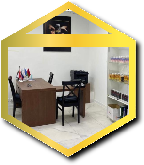
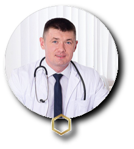
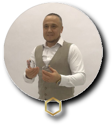
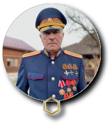
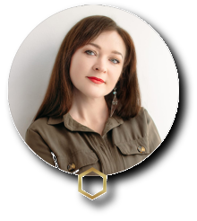

ЖИВАЯ ЗЕМЛЯ
производит и реализует органоминеральные пищевые
продукты,
удобрения и корма для животных на основе
сапропеля из озера с
содержанием органики 90%


О КОМПАНИИ
Общество с ограниченной ответственностью
«Живая земля»
- Дата регистрации: 10 августа 2021
- ИНН: 0268094281
- ОГРН: 1210200040357
- Адрес: Республика Башкортостан, г. Стерлитамак

ОСНОВАТЕЛИ

Кошелев Геннадий Геннадьевич
Ген. Директор ООО «Живая Земля» Учредитель Агентства Развития Туризма «КАРКАДАНН» Учредитель Экоотеля «Торатау» Заместитель Председателя Совета Ассоциации Предпренимателей г. Стерлитамак Вице-президент Профессиональной мед. Ассоциации «АПОДИТ»

Максютов Руслан Рамилевич
Президент Профессиональной Медицинской Ассоциации «АПОДИТ» Генеральный директор Клиники традиционной и альтернативной медицины «АПОДИТ КЛИНИКА»

Плеханов Вячеслав Григорьевич
Верховный атаман Казачьего природоохранного союза, Генерал-полковник Официальный долларовый миллионер Эстонии во времена СССР

Ларина Анна Александровна
Директор Агентства по развитию туризма «Каркаданн» Председатель «Союза Успешных Женщин» Республики Башкортостан Учредитель эко-спа комплекса «ШИШКИ» Практикующий психолог, бизнес тренер, предприниматель, общественник

Сайфуллин Олег Анатольевич
Директор по развитию ООО «Живая земля» Основатель Академии «ПРОБИЗНЕС» Опыт в построении Бизнеса 12 лет
ПРОДУКЦИЯ
Компания «Живая земля» - производит и реализует
органоминеральные пищевые продукты, удобрения и корма
для животных на основе сапропеля из озера с содержанием органики
90%.
Продуктовая линейка постоянно увеличивается
и ассортимент расширяется!